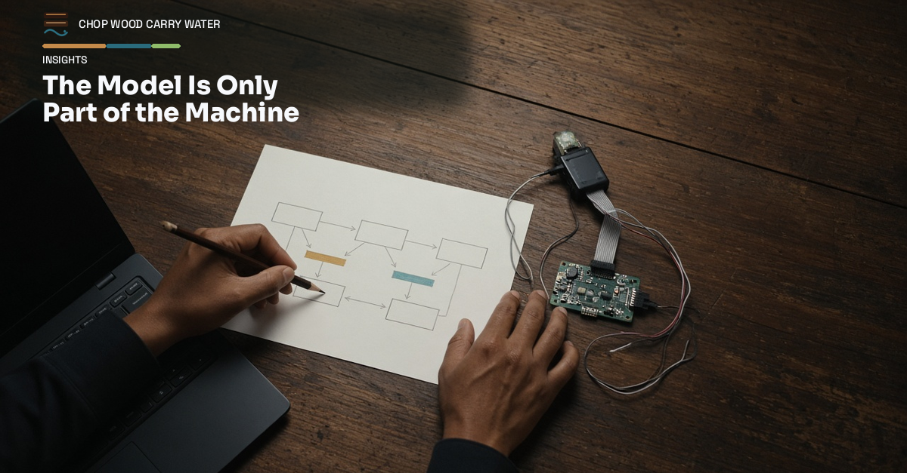
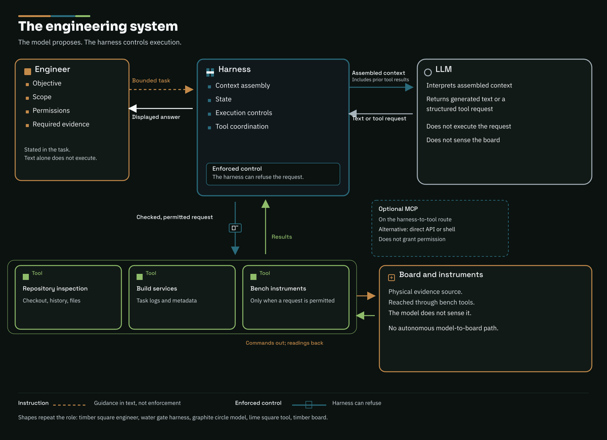
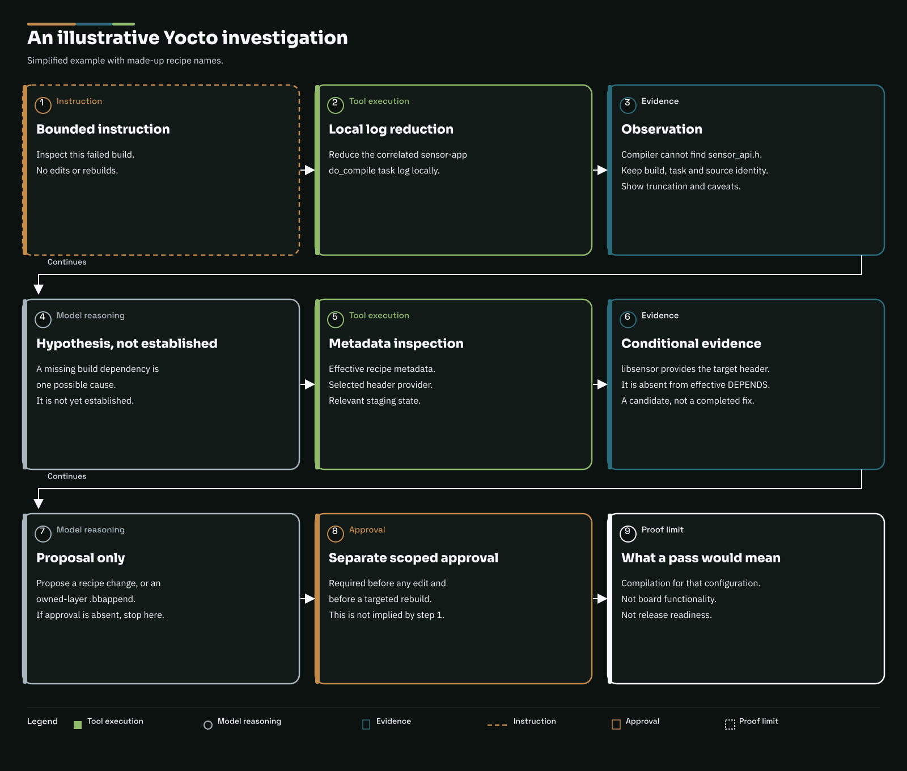
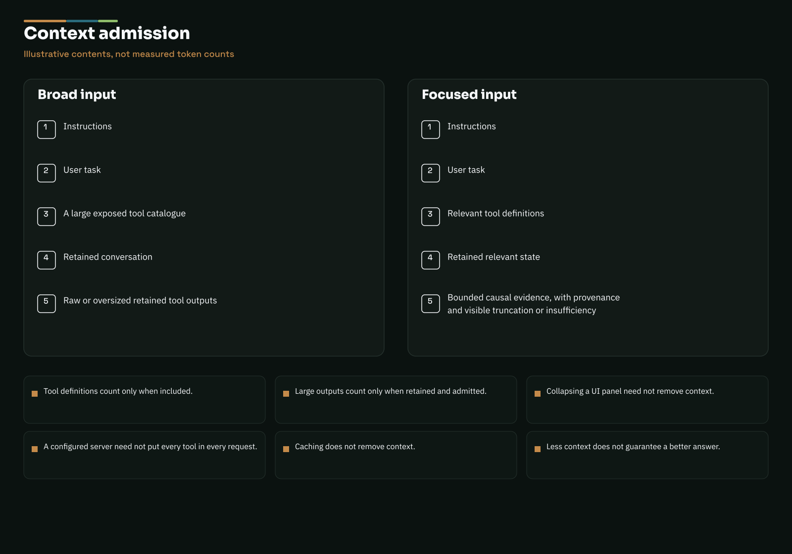

Working practice · 2nd October 2026
The Model Is Only Part of the Machine
Follow a Yocto build failure through an LLM harness and its tools: what runs, what enters context, and what we still need to check on the board.

A Yocto build has failed. The last screenful tells us which task stopped, but not necessarily why. Somewhere behind it are a compiler diagnostic, a recipe, a sysroot and the configuration that joined them together.
We can paste the error into a chatbot and ask for suggestions. With the right tools connected, we can also ask the assistant to read the task log and inspect the recipe. Before letting it loose on a project, I want to understand what happens between that request and a command running on our machine.
We spend plenty of time choosing processors, but a board's behaviour depends on the software and peripherals around them too. An LLM isn't deterministic in the way we usually expect. Still, looking at the surrounding system helps explain why the same model can be useful in one setup and frustrating in another.
What happens after we press Enter?
Our words reach an application first. It assembles a request containing our message, instructions, relevant conversation history and descriptions of the tools it has made available. It may also include selected files or earlier tool results.
Text is encoded as tokens: numbered units that can represent words, parts of words, punctuation or whitespace. The model processes that context and generates output incrementally. The service decodes the output; the application renders it, often in streamed chunks. Those chunks are not necessarily individual tokens.
That output might be an explanation. It might instead be a structured request to use a tool. Writing that request does not execute it.
The software around the model receives the request, checks it and performs an allowed operation. It then supplies the result to the model, which can answer or request another operation. One instruction from us can therefore lead to several model calls, with real tool executions between them.
The harness is part of the engineering
That surrounding software is often called the harness. It puts together the model's input, handles tool requests and decides what can run. It also keeps track of the conversation. Some of it may run on our desktop and some in a remote service.
When the model asks to read a file or run a build, the harness passes the permitted request to a tool. The result comes back through the harness for the model to interpret.

Read this diagram as text
- The engineer gives the harness a task, its scope, permissions and required evidence.
- The harness sends context to the LLM and receives generated text or a tool request.
- The harness checks requests before passing them to repository, build or bench tools.
- Tool results return to the harness and can enter the next model request.
- Bench commands go to the board; readings come back through the bench tools. The model does not measure the board directly.
- MCP is an optional connection between the harness and tools. Direct APIs or shell calls are alternatives; the connection does not grant permission.
Writing “do not flash the board” in a prompt tells the model what we want. A harness that blocks flashing can enforce it. For anything that might damage hardware or change a live system, I want more than a sentence in the prompt.
MCP, the Model Context Protocol, gives the application a standard way to connect to tools and information sources. An MCP server might offer repository searches or access to a build service. The model sees descriptions of the available tools; the application handles the connection and calls.
Direct APIs and shell integrations work too. MCP makes the connection more consistent; we still need to decide which tools to expose and how much access to give them.
Follow one failed build
Let's take a simplified example, using made-up recipe names.
Suppose sensor-app fails in do_compile, reporting that sensor_api.h cannot be found. Our initial instruction could be:
Find out why sensor-app failed in this build and checkout. Read the relevant task log, inspect the recipe and check where the missing header should come from. Don't change files or start another build yet. Tell me what you've found and what you would check next if the cause is still unclear.
First, a local tool extracts the relevant error and enough surrounding context to understand it, keeping track of which build and task it came from. Sending a whole Yocto build log can burn a lot of tokens on successful tasks and repeated progress messages. If the harness keeps that log in the conversation, the same bulk can be carried into later requests too. We want the useful evidence, not every line the build produced.
The compiler couldn't find the header. That doesn't tell us whether a dependency is missing, the include path is wrong or the provider failed to install it. The assistant needs to inspect those possibilities rather than jump straight to a patch.
The next tool calls can check the effective recipe metadata and the provider's installed and staged files. This needs the actual build configuration: finding a similarly named recipe in another layer isn't enough. We also need to check that we're looking at the target sysroot, not host-native tools.
Suppose we find that libsensor supplies the header but is missing from sensor-app's build dependencies. In Yocto, DEPENDS gets the dependency's headers and libraries into the appropriate recipe sysroot. Adding an absolute include path into a work directory would miss the underlying problem.
Now the assistant has a reason to propose adding libsensor to the recipe metadata, perhaps through a .bbappend in our own layer. DEPENDS takes recipe-provider names, not a libsensor-dev package name. We can review the suggested edit against the files we've just inspected.
Once we've agreed the change and rebuild, the assistant can apply the edit and rebuild the recipe. If that passes, we still need to test it on the board.

Read this diagram as text
- Ask for a read-only investigation of the failed build.
- A local tool extracts the sensor-app do_compile error with the build, task and source details.
- The compiler cannot find sensor_api.h. A missing dependency is one possible explanation.
- Tools inspect the effective recipe, selected header provider and sysroot. In this made-up example, libsensor supplies the header but is absent from DEPENDS.
- The assistant proposes a recipe or owned-layer .bbappend change. Without approval, it stops there.
- Approve the edit and targeted rebuild separately. A pass means the configuration compiles; the board still needs testing.
Our prompt is not the whole prompt
Tool access uses tokens before any tool runs. The model needs descriptions and argument formats to know what it can call. With a large tool catalogue, that can be a sizeable part of the prompt. Some harnesses send the whole catalogue; others load the tools as they're needed.
Tool results add to that input. An entire log or a huge JSON response can stay in the conversation and be sent again on later requests. A collapsed log panel may still contain thousands of lines that the model receives.
Choosing what to keep takes care. A few lines around the first error may explain far more than the final screenful. We need enough context to follow the failure, and a record of where those lines came from.

Read this diagram as text
- Both requests include instructions and the user's task.
- A broad request also includes a large tool catalogue, retained conversation and oversized tool results.
- A focused request selects relevant tool definitions, useful state and evidence that explains the failure, with its source and any extraction limits.
- The comparison shows contents, not measured token counts or guaranteed savings.
- Tool definitions use context when included; results use context when admitted and retained. Hiding a UI panel or caching input does not remove that context.
Our log-analysis guidance starts with a local parser or filter before asking the model to interpret the result. It keeps related task messages together and asks us to test for interleaved output, multiline errors and redaction. If it finds no useful diagnostic, the result should say so rather than imply the build was fine.
Longer prompts can cost more and take longer to process, although caching may reduce the cost of repeated input. They also leave less room for the information we need next. Eventually the harness has to drop or summarise older material.
Bring-up and measurements follow the same pattern
For peripheral bring-up, we can ask the assistant to inspect device-tree configuration, pin assignments and driver settings. A build checks whether that configuration compiles. Boot logs and captured bus transactions help us find out what the board actually does. The source files won't tell us whether a pull-up was fitted.
For low-power debugging, a tool connected to an instrument can supply current readings. The assistant can compare them with wake sources and peripheral state, provided we tell it which board, firmware and operating conditions produced them. It is interpreting a measurement, not measuring current itself.
Our earlier CWCW Insight, The log changed the system, described how logging and its transport can distort the behaviour we're trying to measure. Having an assistant request the capture doesn't remove that problem. We still need to understand the instrument and its limitations.
Give it an engineering task
It helps to say what we're trying to find out, which build or board we're working on, what the assistant may change and when it should stop. “Find out why this build failed; do not change it” is a useful starting point. We can ask it to apply a patch and rebuild once we've looked at the diagnosis.
Logs and files are information for the investigation. Text inside them shouldn't be treated as instructions to change the job or grant more access.
For a long build, let ordinary software handle waiting and completion events. Bring the model back when there is something to interpret, rather than paying it repeatedly to discover that the build is still running.
Take a build failure you already understand and ask the assistant to investigate it read-only. Compare its diagnosis with yours, and look at the tool output the harness sent to the model. Then choose the next engineering task you're willing to let it take on.
(Codex helped draft this)